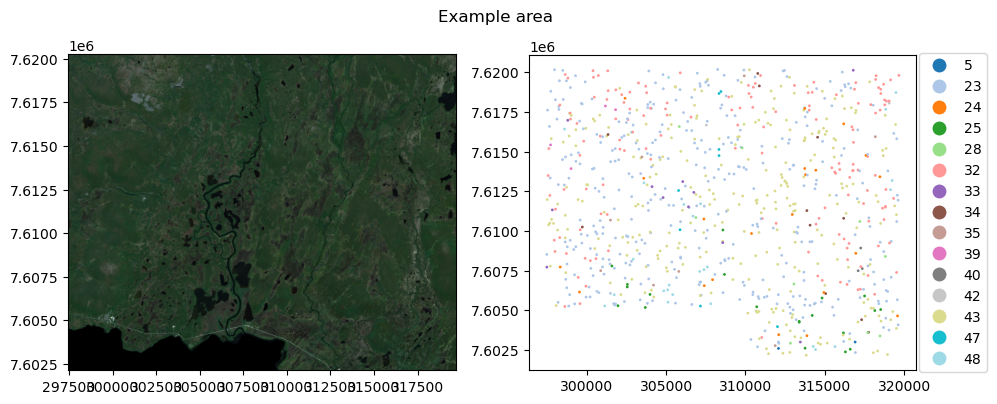
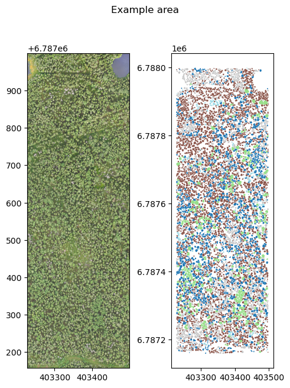
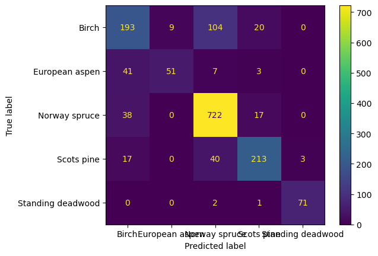

import rasterio as rio
import geopandas as gpd
from pathlib import Path
import rasterio.plot as rioplot
import matplotlib.pyplot as pltTabular data workflow
Point-based
path_to_data = Path('workflow_examples/')
raster_data = path_to_data/'s2_2018_lataseno.tif'
point_data = path_to_data/'points_clc.geojson'Example data here are Sentinel 2 mosaic from 2018, with 9 bands, and scattered point observations from that area. Target class for the points is Corine Land Cover class for the corresponding location
fig, axs = plt.subplots(1,2, dpi=100, figsize=(10,4))
with rio.open(raster_data) as src:
rioplot.show((src, (3,2,1)), adjust=True, ax=axs[0])
train_gdf = gpd.read_file(point_data)
train_gdf['corine'] = train_gdf.corine.astype('category')
train_gdf.plot(column='corine', ax=axs[1], cmap='tab20', markersize=1, legend=True,
legend_kwds={'loc':'right', 'bbox_to_anchor':(1.2,0.5)})
plt.suptitle('Example area')
plt.tight_layout()
plt.show()
Create the dataset
CLI
geo2ml_sample_points \
example_data/workflow_examples/points_clc.geojson \
example_data/workflow_examples/s2_2018_lataseno.tif \
corine \
example_data/workflow_examples/points/ \
--out_prefix examplePython
from geo2ml.scripts.data import sample_pointsoutpath = path_to_data/'points'
sample_points(point_data, raster_data, 'corine', outpath, out_prefix='example')Training a random forest
from sklearn.ensemble import RandomForestClassifier
from sklearn.metrics import classification_report
from sklearn.model_selection import train_test_split
import pandas as pddf = pd.read_csv(outpath/'example__s2_2018_lataseno__points_clc__corine.csv')
y = df['corine']
X = df.drop(columns='corine')
X_train, X_test, y_train, y_test = train_test_split(X, y)
rf = RandomForestClassifier()
rf.fit(X_train, y_train)RandomForestClassifier()In a Jupyter environment, please rerun this cell to show the HTML representation or trust the notebook.
On GitHub, the HTML representation is unable to render, please try loading this page with nbviewer.org.
RandomForestClassifier()
y_pred = rf.predict(X_test)
print(classification_report(y_test, y_pred, zero_division=0)) precision recall f1-score support
23 0.55 0.77 0.64 81
24 0.00 0.00 0.00 7
25 0.00 0.00 0.00 7
28 0.00 0.00 0.00 2
32 0.42 0.36 0.39 36
33 0.00 0.00 0.00 2
34 0.00 0.00 0.00 2
35 0.00 0.00 0.00 3
39 0.00 0.00 0.00 1
40 0.00 0.00 0.00 2
42 0.00 0.00 0.00 1
43 0.70 0.72 0.71 75
47 1.00 0.50 0.67 2
48 0.83 0.83 0.83 6
accuracy 0.59 227
macro avg 0.25 0.23 0.23 227
weighted avg 0.53 0.59 0.55 227
Polygon-based
Example data here is RGB UAV data from Evo, Hämeenlinna, and the target polygons are tree canopies. Target class is the species (Spruce, pine, birch, aspen) or standing deadwood, found on column label. As the extracted features, we use min, max, mean, std and median of the red, green and blue channels within the canopies.
uav_data = path_to_data/'example_area.tif'
canopy_data = path_to_data/'canopies.geojson'
fig, axs = plt.subplots(1,2, dpi=100, figsize=(5,7))
with rio.open(uav_data) as src:
rioplot.show((src, (1,2,3)), adjust=True, ax=axs[0])
train_gdf = gpd.read_file(canopy_data)
train_gdf.plot(column='label', ax=axs[1], cmap='tab20')
plt.suptitle('Example area')
plt.tight_layout()
plt.show()
CLI
geo2ml_sample_polygons \
example_data/workflow_examples/canopies.geojson \
example_data/workflow_examples/example_area.tif \
label \
example_data/workflow_examples/polygons/ \
--out_prefix example \
--min --max --mean --std --medianPython
from geo2ml.scripts.data import sample_polygonsoutpath = path_to_data/'polygons'
sample_polygons(canopy_data, uav_data, 'label', outpath, out_prefix='example',
min=True, max=True, mean=True, std=True, median=True,
count=False, sum=False, categorical=False)/home/mayrajeo/miniconda3/envs/point-eo-dev/lib/python3.11/site-packages/rasterstats/io.py:328: NodataWarning: Setting nodata to -999; specify nodata explicitly
warnings.warn(Dataset structure
Train model
from sklearn.preprocessing import LabelEncoder
from sklearn.metrics import confusion_matrix, ConfusionMatrixDisplaydf = pd.read_csv(outpath/'example__example_area__canopies__label.csv')
le = LabelEncoder()
y = le.fit_transform(df['label'])
X = df.drop(columns='label')
X_train, X_test, y_train, y_test = train_test_split(X, y)
rf = RandomForestClassifier()
rf.fit(X_train, y_train)RandomForestClassifier()In a Jupyter environment, please rerun this cell to show the HTML representation or trust the notebook.
On GitHub, the HTML representation is unable to render, please try loading this page with nbviewer.org.
RandomForestClassifier()
y_pred = rf.predict(X_test)
print(classification_report(y_test, y_pred, zero_division=0, target_names=le.classes_)) precision recall f1-score support
Birch 0.67 0.59 0.63 326
European aspen 0.85 0.50 0.63 102
Norway spruce 0.83 0.93 0.87 777
Scots pine 0.84 0.78 0.81 273
Standing deadwood 0.96 0.96 0.96 74
accuracy 0.81 1552
macro avg 0.83 0.75 0.78 1552
weighted avg 0.80 0.81 0.80 1552
cm = confusion_matrix(y_test, y_pred, labels=rf.classes_)
disp = ConfusionMatrixDisplay(confusion_matrix=cm, display_labels=le.classes_)
disp.plot()
plt.show()